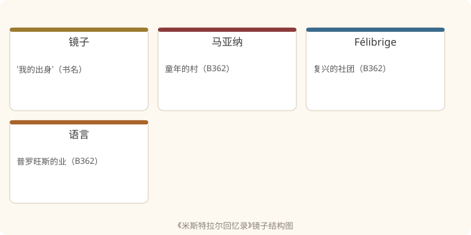

米斯特拉尔回忆录
一、基本信息
| 作者 | 弗雷德里克·米斯特拉尔 |
|---|---|
| 成书/出版 | 1906年（Britannica B362：Moun espelido（Mes origines, 1906; Memoirs of Mistral）——'his best-known work'） Frederic Mistral — Encyclopaedia Britannica（百科全书） |
| 国别/地区 | 法国 |
| 时代 | 近代 · 20世纪初 |
| 体裁 | 回忆录 |
| 语言 | 奥克语（普罗旺斯语） |

《米斯特拉尔回忆录》镜子结构图（主题·结构图）
二、创作背景
Britannica（B362）：Moun espelido——'his best-known work'（其最知名之作）。
Britannica（B362）：米斯特拉尔——1904诺奖；Félibrige 创始人。
题材（通说待核）：'我的镜子'（Moun espelido 直译）——童年、Félibrige 与语志业。
三、内容脉络
（通说待核）'我的镜子'：马亚纳的童年与语言觉醒。
（通说待核）'Félibrige'七人组（通说待核）。
四、主要人物表
| 人物 | 身份 | 说明 |
|---|---|---|
| 米斯特拉尔 | 回忆者 | （B362 语境） |
五、主题与艺术特点
- '我的镜子'（书名直译——通说待核）。
- 语言复兴的自述（B362：Félibrige）。
- 诺奖资金的博物馆（B362 交叉）。
六、影响与评论
- Britannica：'his best-known work'（B362）。
Frederic Mistral — Encyclopaedia Britannica（百科全书） - Britannica：1904诺奖（B362 交叉）。
Frederic Mistral — Encyclopaedia Britannica（百科全书）
七、阅读建议
难点
- 奥克语自述（读译本）。
- 'Félibrige'的史。
- 《米斯特拉尔回忆录》中译名（《我的出身》）待核。
- 奥克语原版（公有领域）。
米斯特拉尔自传；与《米蕾伊》对读。
八、待核实
- 'Moun espelido'直译（我的镜子）核对。
- 1906年出版细节待核。
- '七人组'细节待核。